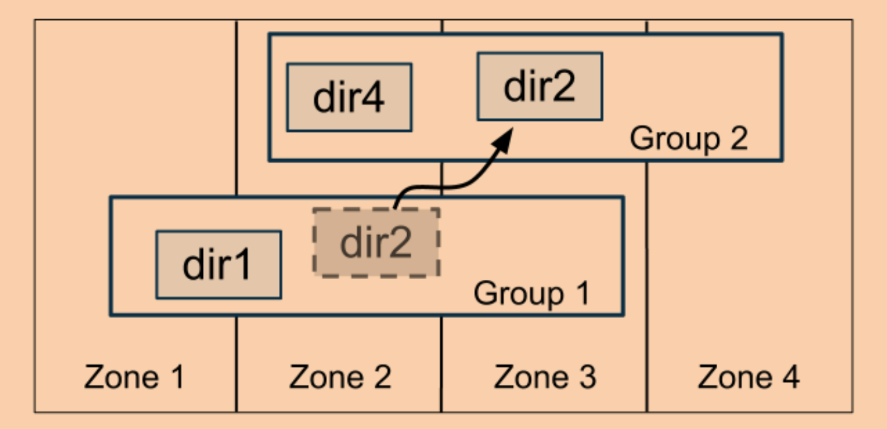

本文是我阅读这篇论文过程中的笔记，以及自己的一些思考。
简介
Spanner是谷歌的多版本，高可扩展性分布式数据库，能够在将数据分布于全球的同时支持强一致性（文中称为external consistency），支持类SQL语言进行查询，支持事务操作，该系统是首个能够做到支持这些特性的数据库。
Spanner从宏观上来看，其实是一个将数据分片存储到不同的服务器上（为了高可用性，这些服务器可能散落在不同的数据中心中），并且把每个分片的数据都采用Paxos来进行共识。
该系统最主要的特色是在副本分布在全球的情况下尽可能高的优化了读操作的性能。
为了实现强一致性的读，最直接的方式是像Raft一样直接让leader来处理所有的读请求，因为leader拥有最新的数据，那么也更容易的实现强一致性。但是这样实现会让leader负载过大成为性能瓶颈。所以Spanner选择让像ZooKeeper那样，允许非leader节点处理读请求，那么就要考虑如何保证读操作能够读到发生在其之前的全部写操作。
ZooKeeper采用的是逻辑时钟，客户端的读请求会带上一个单调递增的ZXID，服务器返回该ZXID之前的最新的数据，而为了获得全局最新的ZXID，客户端需要向leade询问，在一个数据中心中的集群还可以接受，但是对Spanner这种大规模分布式系统而言，会非常影响读性能。
而Spanner采用的是时间戳，假设所有计算机上的时间都是精确同步的，那么的确，可以直接通过当前时间就可以确定读写操作之间的绝对顺序，然后返回正确的数据。但是现实生活中，计算机上的时间是有误差的，有的机器上的时间更快有的更慢。Spanner是如何解决这些问题的，我会在下面讲解。
基本架构

上图为Spanner的简化架构，Zone可以认为就是一个数据中心，dir为directory，可以看做是关系型数据库的一个表，每一个包含若干个dir的方框是一个Paxos集群，数据被分片存储在若干个Paxos group中。
TrueTime
背景介绍
为了更精确的获得时间戳，我们首先得知道时间是怎么生成的，进而知道误差是如何生成的。
时钟是基于振荡器工作的，该振荡器先和一个正确的时间进行同步，然后通过规律的周期性振荡增加时间（比如一秒增加一次），所以假设振荡器能够始终保证正确的振荡频率的话，那么时钟产生的时间将一直是正确的。但是现实生活中，振荡频率是会变化的，这就导致时钟会渐渐和正确的时间相偏移。
所以为了提供标准的时间，一些政府的实验室各自维护了一个高精度时钟，这些时钟之间互相校准生成一致的标准时间（UTC）。这些实验室会将标准时间通过不同协议广播出去，比如WWV，GPS和NTP等，这样人民就能获取到官方时间了。
对于GPS方式，就是购买一个接收器，卫星会将标准时间通过无线电广播到接收器上，因为时间从卫星广播到接收器上的时间不是固定的，这也是误差最主要的来源。会导致GPS方式发生错误的方式有：天线和接收器错误、无线电干扰等。
而原子钟的简单来说就是使用一个非常稳定的振荡器来生成时间。现在主要有两种技术，铷原子钟和铯原子钟，铷原子钟相对比较便宜，每周会偏移大概几微秒；铯原子钟更贵，不会偏移。因为原子钟只是时钟的振荡部分，所以在启动时，它必须以某种方式与UTC同步，通常是通过无线电广播，如GPS。如果使用铷原子钟的话还需要周期性的同步。
Spanner如何获取时间
Spanner采用的是GPS和原子钟两种方式来获取时间。因为这两种方式对不同的错误类型敏感。所以同时使用可以提高容错性。
Spanner在每个数据中心中设立了一组time master，为每台服务器启动一个timeslave deamon。
大多数的master使用GPS接收器方式获取时间，其他的使用原子钟，所有的master之间会互相校准，如果有master显著偏移，会自动退出。
每个的slave会轮询不同的master获取时间，如果某个服务器的时间的误差超过某个阈值将会被驱逐。Spanner中使用的轮询间隔为30秒。
每个slave会维护一个变量ε，代表对时间误差的保守估计。
考虑到GPS方式本身的误差以及slave请求master造成的延迟，在下次时间同步之前，slave会逐渐增加ε，Spanner采用的配置为200微秒/秒。
所以大概可以知道在一次轮询周期内，ε大概是在0到6毫秒之间。
TrueTime API

上图是TrueTime所暴露出的API：
- TT.now()：返回“当前时间”。和一般获取时间的API不同，该接口返回的是一个范围，称为TTinterval。该接口保证，在接口调用时刻的标准时间一定包含在该区间内。该区间的长度为当时
ε的两倍。 - TT.after(t)：当确定t时刻已经成为过去时返回true。内部实现可以想象：阻塞直到t < TT.now().ealiest。
- TT.before(t)：当确定t时刻还没发生时返回true。内部实现可以想象：直接返回TT.now().latest < t。
需要注意的是，在Spanner中，假设有两个事件，他们的true time分别为t1和t2，那么只有在t1.latest<t2.earliest的时候才能断定t1发生在t2之前，反之同理，其他情况下，是无法判断先后的。
并发控制
本节主要展示Spanner是如何应用TrueTime API来实现强一致性。

就如上图所示，Spanner提供了几种操作：
- 读写事务：单独的写操作也是通过读写事务来实现。
- 只读事务：单独的非快照读操作也是通过只读事务来实现的。
- 快照读：提供快照隔离的读操作。
只读事务需要先预先声明不包含任何写操作，会有系统选择一个时间戳来进行无锁的快照隔离的读操作。
快照读要求客户端提供一个时间戳或者一个可以忍受的过期程度上界并让系统来选择时间戳。
只读事务和快照读都可以在任意的副本上处理。
Paxos Leader Leases
Spanner的Paxos的leader是基于lease的。每一任lease有默认会持续10秒钟，leader候选人在竞选时收到超过半数的投票后，就成为了leader。leader会维护每一个给他投票的副本的lease-vote，每次在一个副本上成功的写入会隐式的延长其对应的lease-vote，当某个lease-vote快要过期时，leader会主动请求延期。
当一个leader因为lease-vote过期不再拥有超过半数的lease-vote时，该leader就下台了，集群就需要选出新的leader。
这里定义一个名词为lease interval，代表着一个leader从上台开始到下台所在的时间段。Spanner保证各届leader的lease interval都不重叠。
这个保证可以通过简单的让leader每次延长lease interval的时候都将其通过Paxos进行共识来实现。等到新leader上任时，会读取上任leader最新的lease interval，然后等到确定其lease interval不会重叠的时候才会开始工作。
第二种实现方式可以不用Paxos进行共识。只需要要求任何一个副本在收到一个lease vote请求并为其投票之后，直到TT.after(TT.now().latest+10)返回true前，都不再为任何其他服务器投票。证明过程略，感兴趣的可以看论文附录A。
leader还维护了一个变量Smax，代表该leader使用过的最大的时间戳。因为Spanner的实现中，允许leader主动退位，那么为了保证lease interval不重叠，要求先等到TT.after(Smax)返回为true时，才允许一个leader主动退位。
读写事务（RW Transactions）
这种事务中的读写操作使用两阶段锁和两阶段提交的方式实现。Spanner的实现大体上是和我上篇文章中讲的是一致的，不同点在于Spanner中coordinator和participants都是运行在Paxos之上的集群，提高了可用性 ，降低了阻塞的可能性。在2PC过程中，是coordinator leader和事务涉及到的participants leader们之间进行交互。
基于两阶段锁协议，这种类型的事务的时间戳可以是在所有锁获得之后释放之前的任意时间内确定，Spanner采用的是Paxos中共识写入该事务的commit log中记录的时间戳。
为了保证写操作的强一致性，Spanner保证如下两个不变性：
- 在一个Paxos group之内，所有的Paxos log会被依次赋予一个单调增长的时间戳，即使期间发生了leader的变更。
- 如果一个事务T2的开始发生于一个事务T1的提交之后，那么T2的时间戳一定大于T1。
对于第一个不变性，需要注意的是，每当leader为某个log设置了一个时间戳s，那么同时也需要更新Smax = s，以此来保证leader任期不相交。
对于第二个不变性，又需要下面两个规则来保证：
定义e(server, i)为coordinator leader收到读写Ti事务的commit消息的事件。
- Start规则：coordinator leader赋给Ti的时间戳必须大于等于TT.now().lastest，该表达式在
e(server, i)发生之后计算。 - Commit Wait规则：coordinator leader只有等到TT.after(si)返回true之后才会应用commit log。
下面是一个典型读写事务的执行流程，客户端发起一个读写事务后：
- 客户端先向事务中涉及到的数据所在的Paxos group中读取数据。
- 相应Paxos group中的leader现在作为participants leader在收到请求后，根据两阶段锁协议会先获取对应数据的读锁，然后响应客户端的读请求返回最新的数据（依旧持有着锁）。
- 为保证在事务过程中，客户端会发送keepalive消息给所有的participants leader防止他们因为超时而自动回滚事务。
- 当客户端收到所有需要的数据后，在本地缓冲区执行逻辑，执行完后。
- 客户端选择一个participants leader作为coordinator leader，然后将本地执行完后修改后数据和被选中的coordinator的信息发送给所有participants leader。
- 非coordinator leader的participants leader收到请求后，会先获取对应数据的写锁，然后选择一个prepare时间戳（必须要比上一个事务的要大），并写入prepare log，最后将prepare时间戳发送给coordinator leader。
- coordinator leader首先先也会获取锁，然后跳过prepare阶段，直接选择commit时间戳，该时间戳要求比所有收到的其他participants的prepare时间戳要大。选定s后，写入commit log。
- 在写入commit log之后，coordinator leader必须先等到TT.after(s)返回为true后，才允许应用commit，即将事务数据写入。（commit wait规则）
- 等到commit wait之后，coordinator leader将commit时间戳发送给客户端还有所有的participant leader。
- participant leader收到请求后，也会使用相同的时间戳提交事务，并写入事务数据。最后participant leader会释放锁，2PC宣告结束。
快照读
因为读写事务中维护的不变性规则，使得Spanner在处理读请求的时候，能够判断一个副本是否到了能够响应读请求的时机。
每个副本都会维护一个叫做safe time的变量Tsafe，该变量反应了当前副本的能够处理的读请求的上界。一个副本可以安全响应Sread小于Tsafe的读请求。如果Sread大于Tsafe的话，会被阻塞直到副本可以安全响应。
定义t(Paxos, safe)为副本当前Paxos log中最大的那个log时间戳。
定义t(TM, safe)需要分两种情况讨论：
- 如果副本当前没有正处于prepare阶段的事务，那么
t(TM, safe)为无穷大∞。 - 如果当前Paxos group有正处于prepare阶段的事务，那么设
x为所有prepare阶段的事务的prepare时间戳的最小值，t(TM, safe) = x - 1。
而Tsafe = min(t(Paxos, safe), t(TM, safe))。
之所以这么设置，是因为如果单纯只是用t(Paxos, safe)来作为Tsafe的话，可能会破坏事务的隔离性读到事务数据的中间状态。
这样，对于一个声明了Sread的快照读请求，就可以在保证强一致性的前提下被处理。
只读事务（RO Transactions）
只读事务的执行分为两阶段：
- 分配一个时间戳
Sread。 - 使用
Sread执行快照读。
如果只读事务中涉及到的数据都存储在一个Paxo group中，那么客户端会将只读事务请求发送给对应group的leader，然后由leader设置Sread为LastTS()，LastTS()为当前group中最后一个commit log的时间戳，然后leader根据Sread处理读请求。
对于数据涉及多个Paxos group的只读事务，可以通过和所有group的leader请求建议的Sread，然后取最大值来实现。目前Spanner采用的是在只读事务开始之后的任意时刻简单的设置Sread为TT.now().latest，这使得读请求可以让非leader节点所处理。但是这种方法可能会因为副本的Tsafe < Sread，而导致读请求阻塞一段时间。
表结构修改事务（Schema-Change Transactions）
这种事务是用来原子性的修改表结构，如果直接使用标准的事务来实现的话，将会是灾难，因为一个表可能涉及到几百万个participants，直接加锁会耗时很长，可能会导致系统长时间无法有效工作。
为了尽可能少的阻塞其他并发操作，该事务会分为两个步骤来实现：
- 显示的为该事务设置一个未来的prepare时间戳。
- 所有处于该时间戳之前的相关读写操作均可以继续执行，而处于该时间戳之后，那么需要阻塞。
这样事务就会在特定时间让所有participants同时执行，将锁持有时间降到最低。
可以改进的点
- 出于对于事务隔离性的考虑，
Tsafe会被当前出于prepared状态的事务所限制，这使得任何在其prepare时间戳后面的读请求都被阻塞。但是其实Tsafe还可以更大，只要这些prepared状态的事务中并不包含读操作中涉及的数据，那么就可以安全的服务大于prepare时间戳的读请求。实现上，因为在lock table中已经存储了哪些数据被锁住了，所以只需要在读请求到达时去lock table中查看是否有数据重叠即可。 - 同样的对于
LastTS()也会限制Sread的大小，但是其实Sread还可以更小，Sread应该为最后一个涉及读事务相关数据的事务的commt时间戳。可以通过在lock table中记录下每个key对应的最新的commit时间戳。这样当读请求到达时，可以通过在lock table中遍历读请求数据的commit时间戳，选择最大的那一个。 - 在一些写操作不频繁的Paxos group，
Tsafe会因为t(Paxos, safe)很小而变得很小，这使得对于大于Tsafe的Sread的读请求会被一直阻塞直到发生下一次写请求，而这可能会耗时很久。为了解决这个问题，假设当前log序号为n，Spanner让Paxos leader定一个未来的时间戳MinNextTS(n)，并承诺对于序号n+1的log的时间戳不会发生在MinNextTS(n)之前，这样t(Paxos, safe)就能变大为MinNextTS(n)-1，进而有可能服务更多的读请求。当然，leader需要保证MinNextTS(n)是在其lease interval范围之内。leader默认会每8秒增大MinNextTS(n)的值一次，如果leader想要让MinNextTS(n)超过他的lease interval边界，那么他必须先延长它的lease。经过这样的修改，可以保证在那些写操作不频繁的group中，最差情况下也能处理当前时间8秒前的读请求。